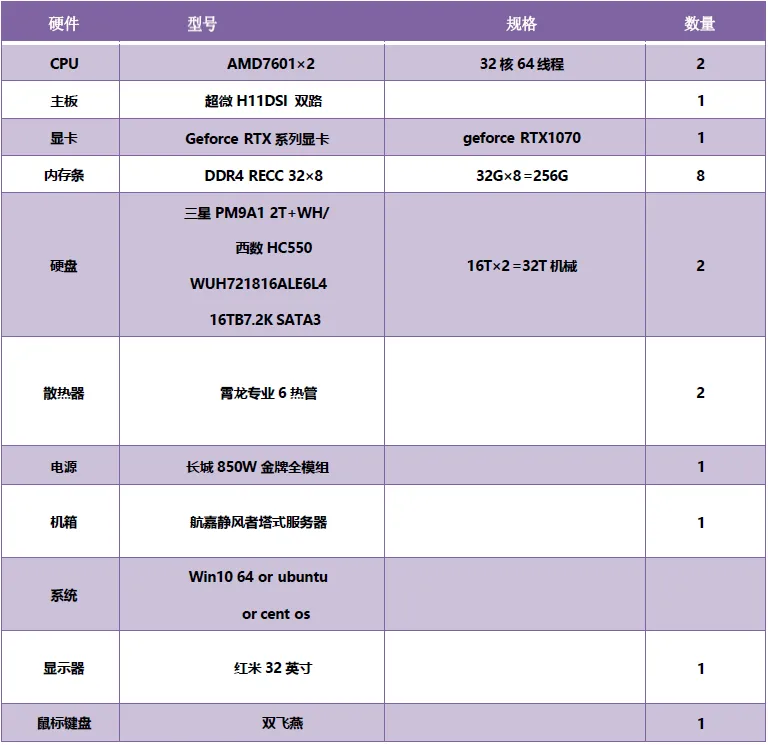
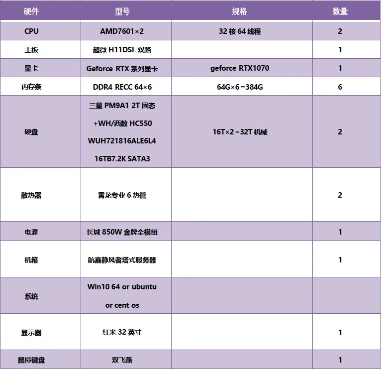
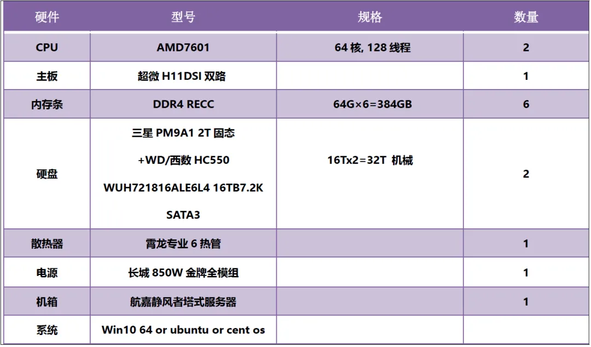
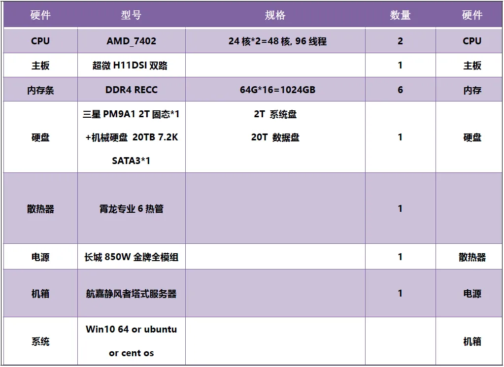
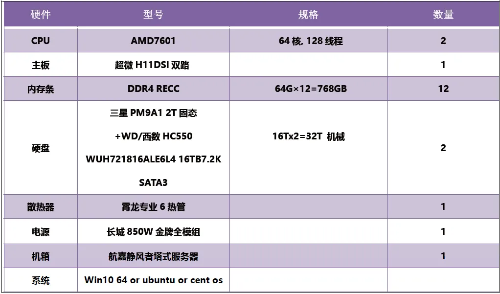
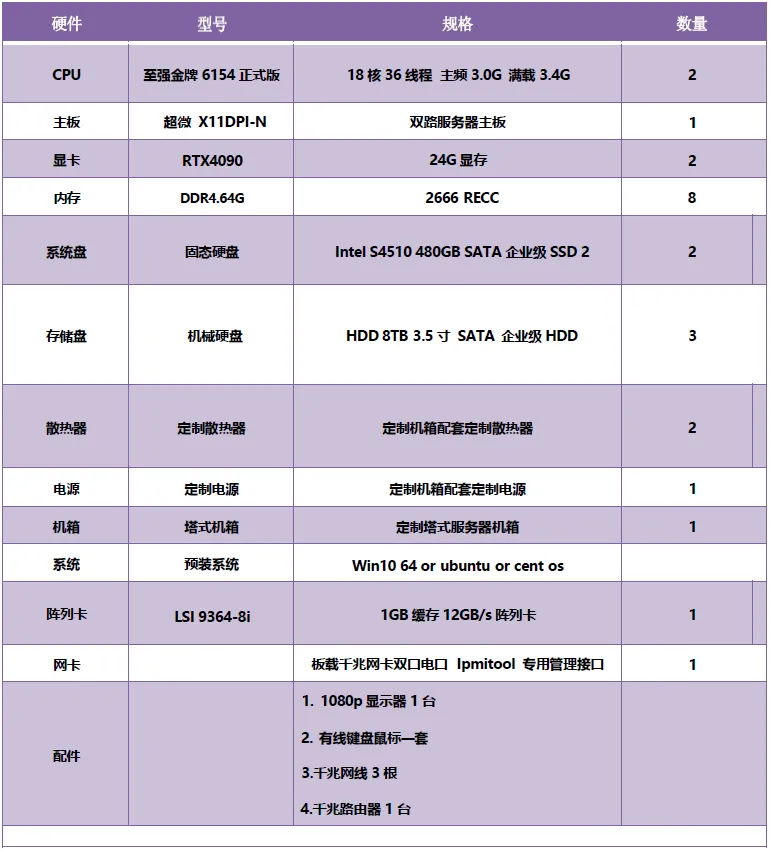
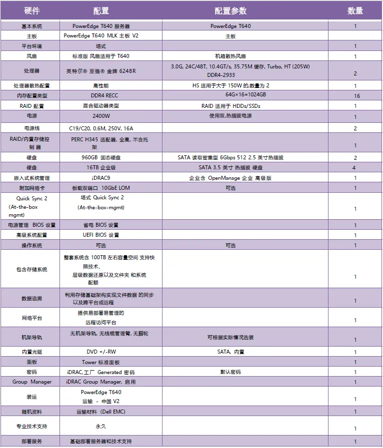
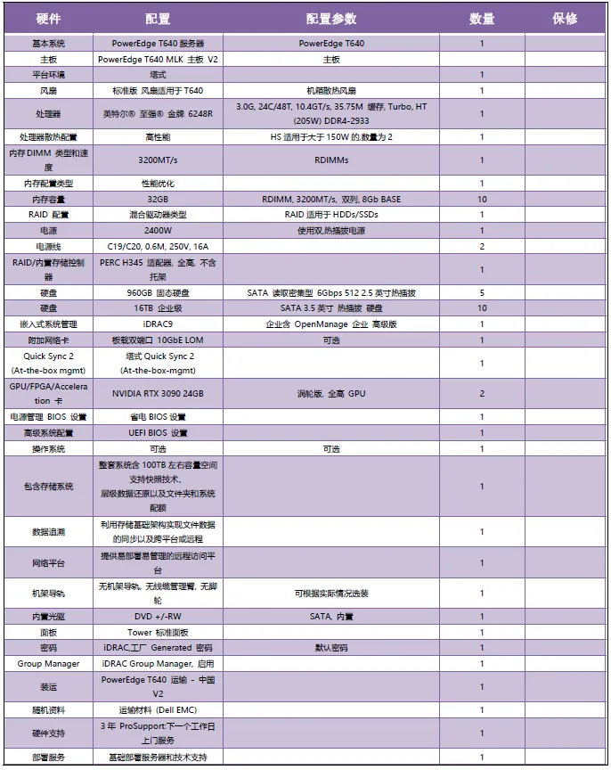

为实验室准备一份生物信息学不动产
原文：https://mp.weixin.qq.com/s?__biz=MzAwMzIzOTk5OQ==&mid=2247506028&idx=2&sn=3b479a92f0c6119c4584efbc23b8c32a&chksm=9b3ca13cac4b282a9ffe1fc4f4ab1a50b14688c6490f859ef714b84a755c286cb8a585054486#rd 合集：服务器
无论在哪一领域，硬件配置 通常是衡量实验室水平的标准之一，不同实验室配备的各种品牌、规格的微量移液器、qPCR仪、显微拍摄设备，都是实验室综合实力的体现。在生物信息学行业里也一样，服务器 CPU与内存的配置通常也一定程度上反映了该实验室数据计算的能力与水平。咱们之前一直在给大家提供性价比很高的云服务器(生信分析为什么要使用服务器？)，虽然托管在云端既不用交电费、也不用担心维修、场地、噪音等问题，但是仍有不少的小伙伴希望能购置实体的服务器安装在实验室里，毕竟不动产放在眼前比较安心。所以Biomamba生信基地也联合瀚海云帆为大家提供几种服务器配置的方案，我们承诺同等配置市场最低价 、最长保修，欢迎货比三家、不怕比较，感兴趣的同学可以联系微信号Biomamba _yunying或文末扫码咨询折扣及详细配置信息。
配置一

报价： 23,500￥
配置二

报价： 27,000￥
配置三

报价：29,999￥
配置四

报价：36,000￥
配置五

报价：42,000￥
配置六

报价：76,000￥
配置七

报价：79,000￥
配置八

报价：160,000￥
配置九
支持DIY，欢迎拿着需求清单找我们做配置
报价：----------￥

如何联系我们
 公众号后台消息更新不及时，超过48h便不允许回复读者消息，这里给大家留一下领取资料、免费服务器(有root权限的共享服务器,注册即送200￥)的微信号[Biomamba_kefu] ，方便各位随时交流、提建议(科研任务繁重，回复不及时请见谅，备注来意会优先通过)。此外呼声一直很高的交流群 也建好了，欢迎大家入群讨论：永久免费的千人生信、科研交流群
公众号后台消息更新不及时，超过48h便不允许回复读者消息，这里给大家留一下领取资料、免费服务器(有root权限的共享服务器,注册即送200￥)的微信号[Biomamba_kefu] ，方便各位随时交流、提建议(科研任务繁重，回复不及时请见谅，备注来意会优先通过)。此外呼声一直很高的交流群 也建好了，欢迎大家入群讨论：永久免费的千人生信、科研交流群
大家可以阅读完这几篇之后添加给生信入门初学者的小贴士 如何搜索公众号过往发布内容

 您点的每个赞和在看，我都认真当成了喜欢
您点的每个赞和在看，我都认真当成了喜欢